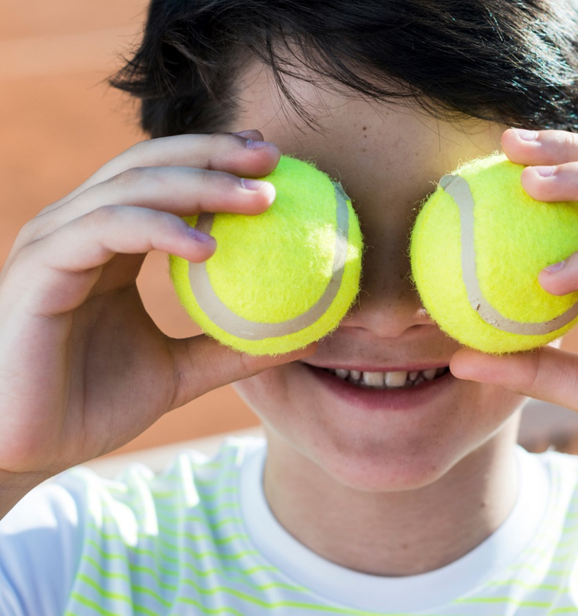

Великий теніс
Большой теннис — активная игра, в которой важно не терять бдительность и разрабатывать собственную стратегию. Такие тренировки придутся по душе как девочкам, так и мальчикам. Большой теннис для детей — хорошая возможность направить энергию в правильное русло с пользой для здоровья. Тренировки делают ребенка организованным, сосредоточенным и выносливым. В результате ему легче даются многие дисциплины и задачи, что положительно отражается на успешности и общем состоянии здоровья. Зрение, мышцы, иммунная система — лишь малая часть того, что будет становиться лучше с каждым занятием.
Преимущества занятия теннисом
- Уроки тенниса для детей — полезный часовой интенсив,
который вместе с улучшениями навыков игры дает:
- стимул развиваться как личности: учиться управлять эмоциями;
- хорошее кардио и тренировку на все группы мышц;
- источник формирования характера, силы воли и выносливости;
- возможность самостоятельно принимать решения и выстраивать тактику уже с раннего возраста;
- стимул продвигаться по данному виду спорта с целью построения успешной карьеры в будущем.
В нашем центре дошкольного развития программа тренировок разрабатывается таким образом, чтобы она подходила для детей до 6 лет. Уже после первого занятия вы заметите, что ваш ребенок заинтересовался и хочет продолжать заниматься. Для этого мы создали все необходимые условия. На занятиях ученикам прививают любовь к большому теннису, как к интересному и полезному направлению. Наши тренеры умеют ладить с детьми и никогда не повысят голос, отдав предпочтение повторно объяснить, как лучше действовать.
С нами большой теннис доступен для детей
Школа большого тенниса при нашем центре сотрудничает с теннисным клубом «Карпаты», где дети познают азы спорта и развиваются в нем. Занятия проходят согласно мировым стандартам под курированием опытных тренеров. Это позволяет воспитанникам в будущем становиться профессиональными игроками, а также принимать участие в соревнованиях.
Как попасть на тренировку?
Начать обучаться игре в теннис может любой воспитанник нашего центра, начиная с 2-х лет. Группы формируются с учетом возраста и навыков, чтобы каждый ребенок мог показать потенциал и развить в себе задатки начинающего теннисиста. Занятия проходят один раз в неделю по одному часу.
Как и где проходят занятия?
Обучение теннису проходит на базе теннисного клуба «Карпаты». Здесь занимаются как новички, так и ведут подготовку к соревнованиям действующие профессиональные спортсмены. Корты соответствуют международным стандартам и регулярно обслуживаются. За счет этого ребенок может полностью сосредоточиться на игровом процессе, не отвлекаясь на дефекты покрытия. Во время тренировок он познает азы, начиная с теории, затем переходит к практике. Благодаря комбинированию игровой процесс становится более понятным и легко усваиваемым. Уже после первого занятия с тренером будет виден результат.
Информация о тренере
С детьми занимаются только профессиональные тренеры, многие из которых имеют большое спортивное прошлое за плечами. Главная их задача — раскрыть потенциал и желание в детях играть в большой теннис. Посещая тренировки ребенок может завести новые знакомства и обрести друзей, что во многом служит решающим фактором в формировании интересов. Для нас является важным, чтобы дети чувствовали себя свободно на корте и смогли на себе ощутить ту самую магию, которая воспитывает профессиональных теннисистов. Наши тренеры умеют работать с детьми и никогда не позволяют себе нарушать рамки дозволенных норм. Это сертифицированные специалисты с многолетним опытом работы в данной отрасли, знающие толк в обучении детской аудитории игры в большой теннис. Благодаря этому дети на тренировках видят в руководителе друга и надежного советчика, знания которого помогают получить достойный результат. В свою очередь тренеры делают все возможное, чтобы воспитанникам заниматься спортом нравилось и хотелось продолжать прогрессировать в улучшении собственных навыков игры.
Цена
Занятия большим теннисом входят в стоимость полного пакета услуг. Благодаря этому ребенок может пробовать себя в разных направлениях, а вам не придется всякий раз доплачивать. В цену включены все организационные моменты: предоставление корта, инвентаря для игры, услуги профессионального тренера и ценная база знаний, которую дети получат на тренировках в максимально правильном для их восприятия виде. Наша теннисная школа станет хорошим началом для ребенка, который хочет познать закулисье увлечения спортом.